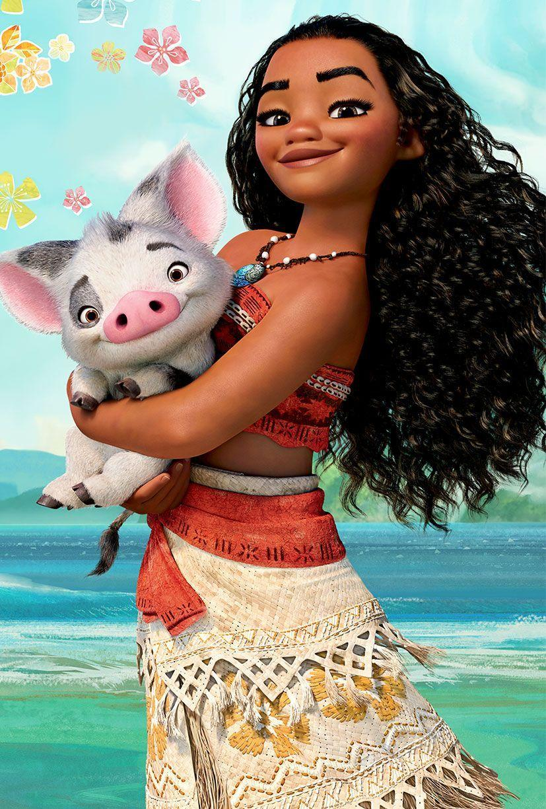
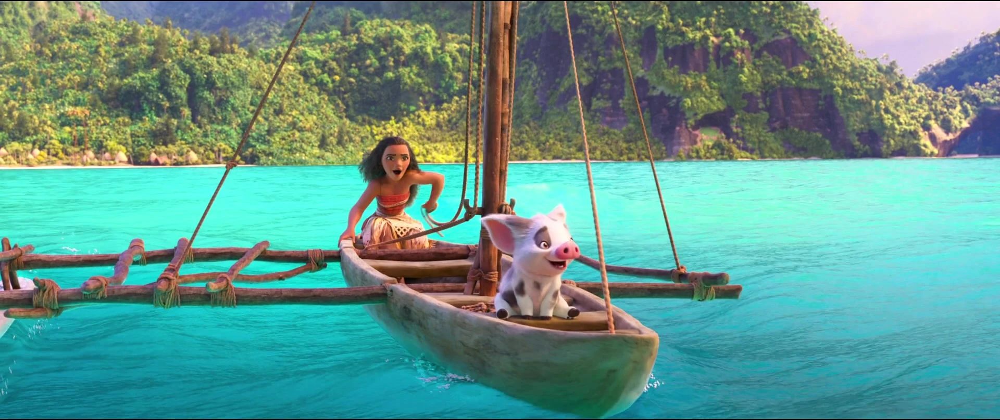

La vida de Moana
Había una vez una joven llamada Moana, cuyo corazón estaba destinado a explorar los vastos océanos del mundo. Desde pequeña, su fascinación por el mar era evidente. Creció en un pequeño pueblo costero donde las olas rompían suavemente en la playa, y cada atardecer pintaba el horizonte con colores cálidos y mágicos. Desde temprana edad, Moana soñaba con navegar por mares lejanos, descubrir islas desconocidas y sumergirse en la inmensidad del océano. Su habitación estaba decorada con mapas del mundo y veleros en miniatura, y pasaba horas leyendo libros sobre exploradores audaces que desafiaron las fronteras del conocimiento.
A medida que crecía, la pasión de Moana por el mar solo se intensificaba. Anhelaba la sensación de libertad que solo el océano podía ofrecerle. Sin embargo, a pesar de su deseo innato de explorar, siempre debía regresar a casa. Sus responsabilidades familiares y las conexiones que tenía con su comunidad la mantenían anclada a su pequeño pueblo. Moana ayudaba a su familia en la pesca, una tradición que se remontaba a generaciones. Aunque amaba el mar, la rutina diaria a veces la frustraba. Sin embargo, sabía que su deber con su familia y su comunidad era importante, y lo hacía con amor.
A medida que los años pasaban, Moana encontró maneras de combinar sus responsabilidades con su amor por el mar. Se convirtió en una experta navegante local, conociendo cada rincón del océano que rodeaba su hogar. Sus viajes eran una mezcla de deber y deseo, y aunque anhelaba la libertad de explorar más allá, siempre regresaba a casa con una apreciación renovada por su hogar y su familia. Un día, mientras observaba el horizonte desde la playa, Moana tomó una decisión. Decidió que, aunque siempre volvería a su casa, exploraría tanto como pudiera mientras estuviera en tierra firme. Comenzó a planificar pequeñas expediciones, a aprender nuevas habilidades de navegación y a conectarse con otros amantes del mar.